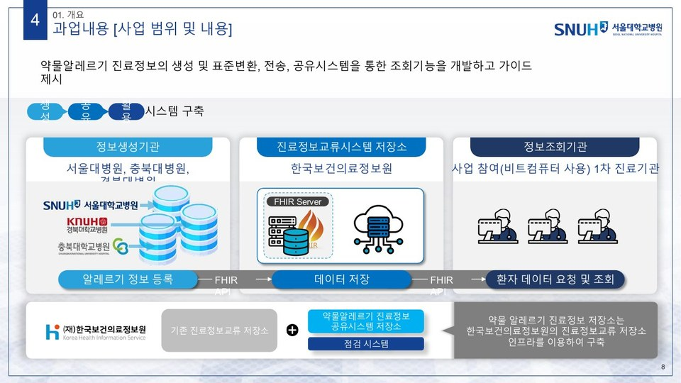
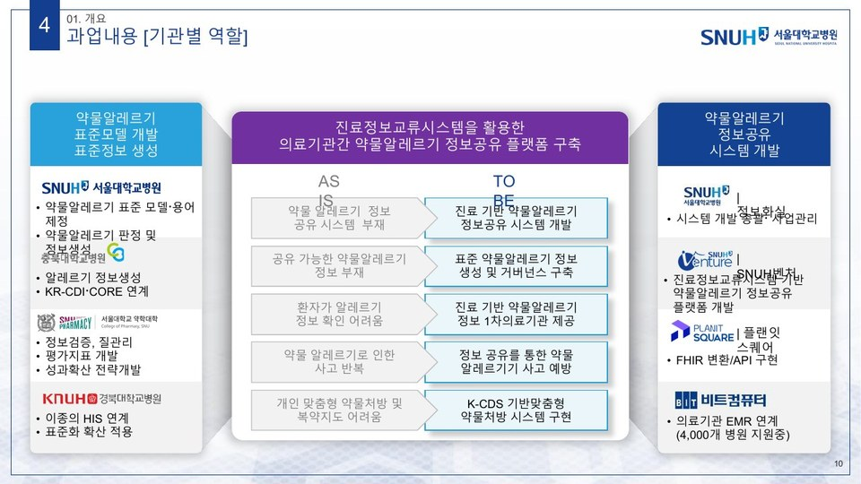
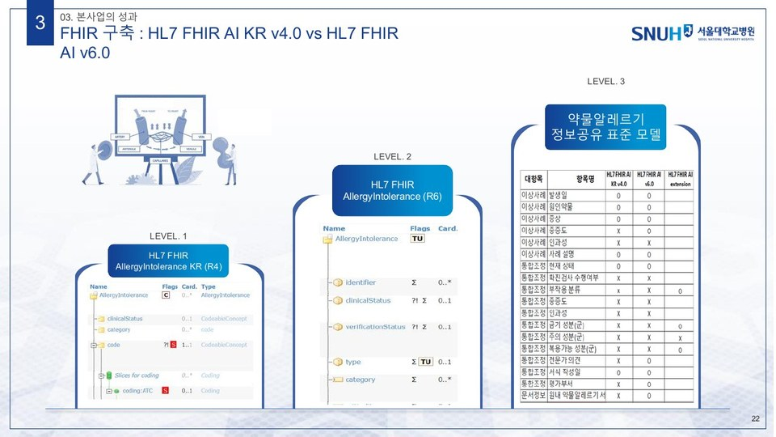
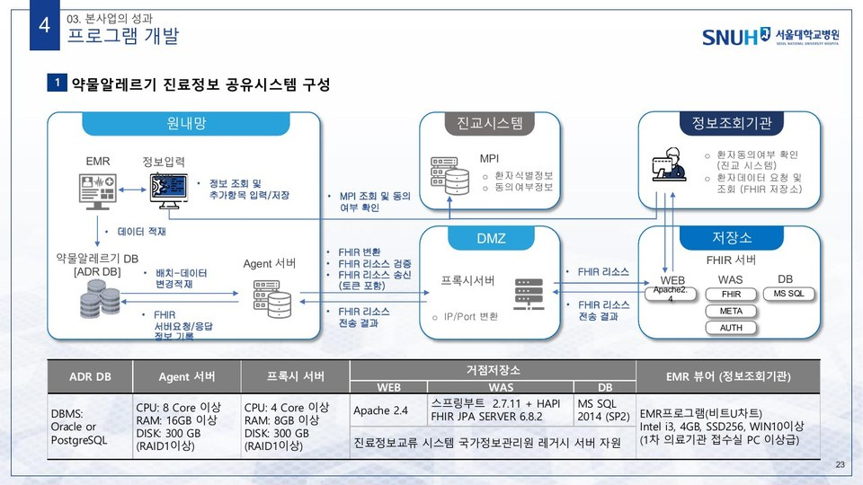
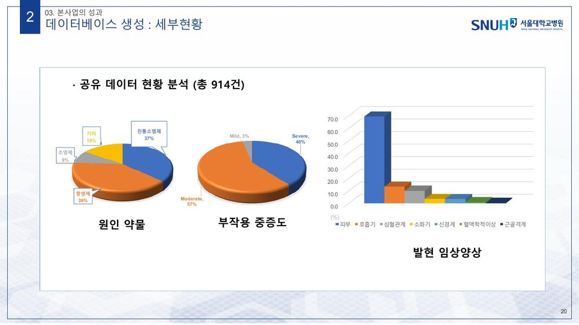
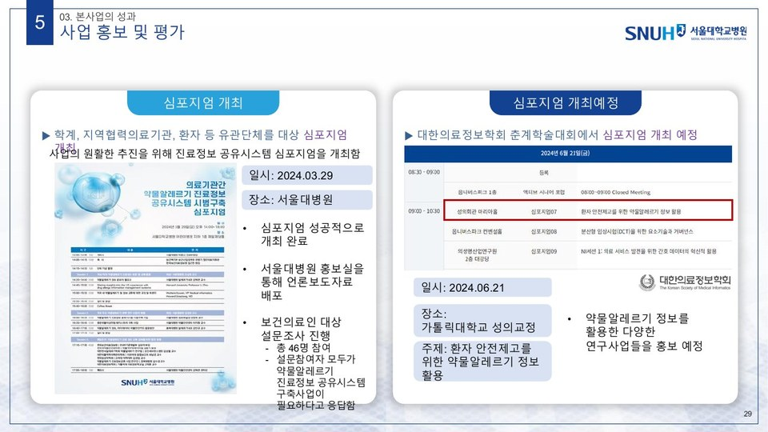
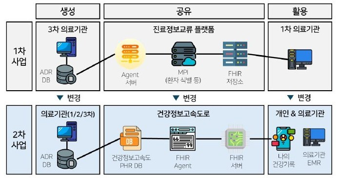
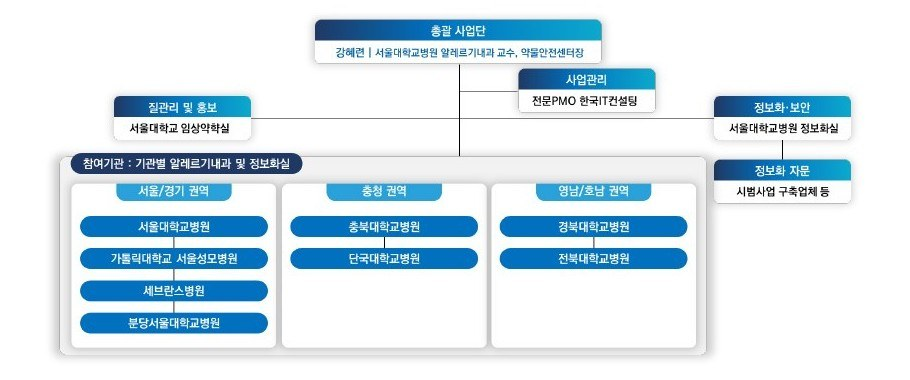

약물알레르기 진료정보교류한국보건의료정보원 · 2023-2025
한 병원에서 확인한 약물알레르기 정보를 다른 병원에서도 볼 수 있게 하려면, 무엇을 어떤 형식으로 주고받을지부터 정해야 합니다. 한국보건의료정보원이 발주한 이 시범사업은 서울대학교병원 알레르기내과 강혜련 교수가 총괄 책임을 맡은 서울대학교병원 컨소시엄이 수행했고, 충북대학교병원 공동연구자로 참여했습니다. 1차 사업에서는 약물알레르기 정보공유 표준항목을 정하고 이를 HL7 FHIR AllergyIntolerance 리소스로 옮긴 뒤, 진료정보교류시스템 위에 FHIR 저장소를 세워 상급종합병원에서 만든 정보를 1차 의료기관에서 조회하도록 했습니다. 2차 사업에서는 공유 경로를 건강정보 고속도로로 바꾸어 환자가 '나의건강기록' 앱에서 직접 자기 정보를 확인하고 의료진에게 건넬 수 있게 했고, 참여 병원도 8곳으로 늘렸습니다. 제 몫은 표준서식과 표준도메인을 제정하는 일, 그리고 금기·주의·복용가능 성분군처럼 기존 FHIR 표준에 담기지 않던 항목을 확장으로 정의해 KR-Core와 핵심교류데이터(KR-CDI)에 반영하는 일이었습니다.
30초 시연 영상
맡은 일
- 1차 사업의 기관별 역할 분담에서 충북대학교병원은 '알레르기 정보생성'과 'KR-CDI·CORE 연계'를 맡았습니다. 표준모델 개발과 표준정보 생성 축에 속한 세 병원 가운데 국가 표준 연계를 명시적으로 배정받은 기관이었습니다.
- 2차 사업의 기관별 주요 역할표에서 충북대학교병원에만 '약물알레르기 정보 및 인터페이스 표준 정의'가 적혀 있습니다. 나머지 일곱 병원은 HIS 화면 설계, 데이터 입력, PHR 연계, 테스트 수행으로 역할이 정리되어 있습니다.
- 약물알레르기 정보공유 표준서식과 표준도메인을 이상사례·통합조정·문서정보·환자정보의 네 영역으로 설계했습니다. 원인약물은 ATC 코드를, 증상은 MedDRA를 기준으로 삼되 ATC로 표기하기 어려운 성분은 KD 코드로도 정의할 수 있도록 코딩 범위를 조정했습니다.
- HL7 FHIR AllergyIntolerance 리소스에 없던 항목을 확장(extension)으로 정의하는 작업을 맡았습니다. 부작용 유형, 중증도, 인과성, 확진검사 수행여부, 그리고 금기·주의·복용가능 성분군을 substance exposure risk 확장의 known-reaction-risk, potentially-crossreactive-reaction-risk, no-known-reaction-risk로 표현하는 구조를 정리했습니다.
- 개별 이상사례를 하나로 묶는 통합조정(reconciliation) 규칙을 세웠습니다. 원인 기전이 같으면 묶고 다르면 묶지 않는다는 원칙에 따라, 진통소염제 전반의 과민반응은 하나로 묶되 세파 계열과 퀴놀론 계열 항생제는 묶지 않도록 정했습니다.
- 국가 핵심교류데이터(KR-CDI)의 알레르기불내성 항목 고도화 제안을 작성했습니다. 발생일·원인물질·증상만 있는 현행 항목에 복용가능 의약품, 금기 의약품, 주의 의약품, 중증도, 인과성, 확진검사를 더하고 이를 HL7 FHIR KR에 반영하자는 내용입니다.
- 충북대학교병원 원내 HIS의 약물부작용 관리 프로그램과 약물알레르기 정보공유 프로그램을 연계해, 신고된 부작용 이력을 개별사례로 자동 등록하는 기능을 붙였습니다. 2차 사업에서는 지역의약품안전센터와 연구진이 공유 가능하다고 판단한 사례만 PHR DB로 자동 연계되도록 했습니다.
- 2023년도 진료정보 교류사업 우수사례 공모전에서 진료정보회송 부문 우수상을 받았습니다. 출품 주체는 충북대학교병원 알레르기내과와 지역의약품안전센터이고, 주제는 진료정보교류시스템을 활용한 약물알레르기 정보 공유였습니다.
성과 지표
구성 요소

생성-공유-활용의 세 칸으로 나눈 사업 구조
정보생성기관(서울대·충북대·경북대학교병원)이 FHIR API로 알레르기 정보를 올리면 한국보건의료정보원의 진료정보교류 저장소에 쌓이고, 사업에 참여한 1차 진료기관이 다시 FHIR API로 조회합니다. 별도 인프라를 세우지 않고 기존 진료정보교류 저장소 위에 약물알레르기 공유시스템 저장소와 점검 시스템을 얹는 방식을 택했습니다.

컨소시엄의 역할 분담
표준모델 개발과 표준정보 생성은 서울대·충북대·경북대학교병원과 서울대학교 약학대학이, 시스템 개발은 서울대학교병원 정보화실과 SNUH벤처, 플랜잇스퀘어, 비트컴퓨터가 맡았습니다. 충북대학교병원의 몫은 알레르기 정보생성과 KR-CDI·KR-Core 연계였습니다.
약물알레르기 정보공유 표준항목과 표준도메인
이상사례에는 발생일, 원인약물과 약물 코드, 증상과 증상 코드, 중증도, 인과성, 사례 설명을 두고, 통합조정에는 현재상태, 부작용 유형, 중증도, 인과성, 확진검사 수행여부, 금기·주의·복용가능 성분(군)과 전문가 의견을 두었습니다. 여기에 의료기관과 평가자를 담는 문서정보, 등록 대상자를 담는 환자정보를 더해 네 영역으로 서식을 구성했습니다.

HL7 FHIR AllergyIntolerance 고도화
기존 표준으로는 담을 수 없는 항목을 세 단계로 정리했습니다. 1단계는 HL7 FHIR AllergyIntolerance KR(R4), 2단계는 AllergyIntolerance R6, 3단계는 두 표준 어디에도 없는 항목을 확장으로 정의한 약물알레르기 정보공유 표준 모델입니다. 인과성, 확진검사 수행여부, 금기·주의·복용가능 성분(군), 전문가 의견이 확장으로 새로 정의된 항목입니다.

약물알레르기 진료정보 공유시스템 구축
원내망의 ADR DB와 Agent 서버가 FHIR 변환과 리소스 검증을 맡고, DMZ의 프록시 서버를 거쳐 거점저장소의 FHIR 서버로 전송합니다. 환자 식별과 동의 확인은 진료정보교류시스템의 MPI를 이용하고, 정보조회기관은 EMR 뷰어에서 동의 환자의 데이터를 조회합니다. 아홉 가지 시나리오로 통합테스트를 수행해 모두 통과했습니다.

표준 기반 정보 생성과 질 관리
자발보고 자료를 그대로 쓰지 않고, 인과성이 상당히 확실함 이상이고 중등증 이상인 사례를 알레르기 전문가가 다시 평가해 공유 대상을 골랐습니다. 1차 사업에서 모인 914건은 항생제 39%, 진통소염제 37%, 조영제 9%였고 중증도는 중등증 57%, 중증 40%였습니다. 1차 병원 알레르기내과 전문의와 개국약사 등이 참여한 자문회의를 네 차례 열어 공유 화면과 내용을 검토했습니다.

심포지엄과 성과 확산
2024년 3월 29일 서울대학교병원에서 학계와 지역협력의료기관, 환자 단체를 대상으로 심포지엄을 열었습니다. 참석 보건의료인 46명 전원이 이 시스템의 구축이 필요하다고 답했습니다. 이어 2024년 6월 21일 대한의료정보학회 춘계학술대회에서 '환자 안전제고를 위한 약물알레르기 정보 활용' 세션을 열었고, 한국약물알레르기연구컨소시엄(KoDARC) 뉴스레터와 환자용 리플렛으로 사업을 알렸습니다.

2차 사업, 건강정보 고속도로로 갈아타기
1차 사업은 의료진이 환자마다 직접 동의를 받아야 했고 조회는 EMR을 고친 10개 의원에서만 가능했습니다. 2차 사업에서는 공유 경로를 건강정보 고속도로로 바꾸어, 이미 동의 절차를 마친 환자의 정보를 병원 ADR DB에서 PHR DB로 연계하고 환자가 '나의건강기록' 앱에서 직접 조회해 의료진에게 공유하도록 했습니다. 정보 생성 주체도 상급종합병원에서 1·2·3차 의료기관 전체로 넓혔습니다.

2차 사업 컨소시엄과 운영
서울·경기 권역(서울대학교병원, 가톨릭대학교 서울성모병원, 세브란스병원, 분당서울대학교병원), 충청 권역(충북대학교병원, 단국대학교병원), 영남·호남 권역(경북대학교병원, 전북대학교병원)의 여덟 병원이 참여했습니다. 정보 생성 협의체와 정보화 협의체를 따로 두고, 2024년 8월부터 2025년 3월까지 열다섯 차례 회의를 열어 기관별 사례와 조영제 과민반응 관리 프로토콜을 맞췄습니다.
경과
결과와 확산
- 약물알레르기 정보공유 표준항목과 표준도메인 (이상사례·통합조정·문서정보·환자정보의 네 영역)
- HL7 FHIR AllergyIntolerance 프로파일과 확장 정의 (부작용 유형, 중증도, 인과성, 확진검사 수행여부, 금기·주의·복용가능 성분군)
- 표준용어 매핑 기준 (원인약물 ATC와 KD, 증상 MedDRA, 부작용 유형 SNOMED CT, 인과성 WHO-UMC)
- 진료정보교류시스템 기반 약물알레르기 FHIR 저장소와 관제 화면
- 세 병원의 EMR 정보입력 화면과 1차 의료기관 EMR 조회 화면
- 1차 사업 산출물 16종 (요구사항 정의서, 기능 명세서, 데이터베이스 설계서, FHIR 프로파일 정의서, FHIR API 명세서, 시큐어코딩 점검 결과서, 단위·통합테스트 계획서와 결과서 등)
- 전문가가 검증한 약물알레르기 공유 데이터 914건
- 건강정보 고속도로 PHR DB와 병원 ADR DB를 잇는 테이블 명세와 인터페이스 명세
- 국가 핵심교류데이터(KR-CDI) 알레르기불내성 항목 고도화 제안
- 사업 설명자료와 KoDARC 뉴스레터, 환자용 리플렛, 심포지엄 2회